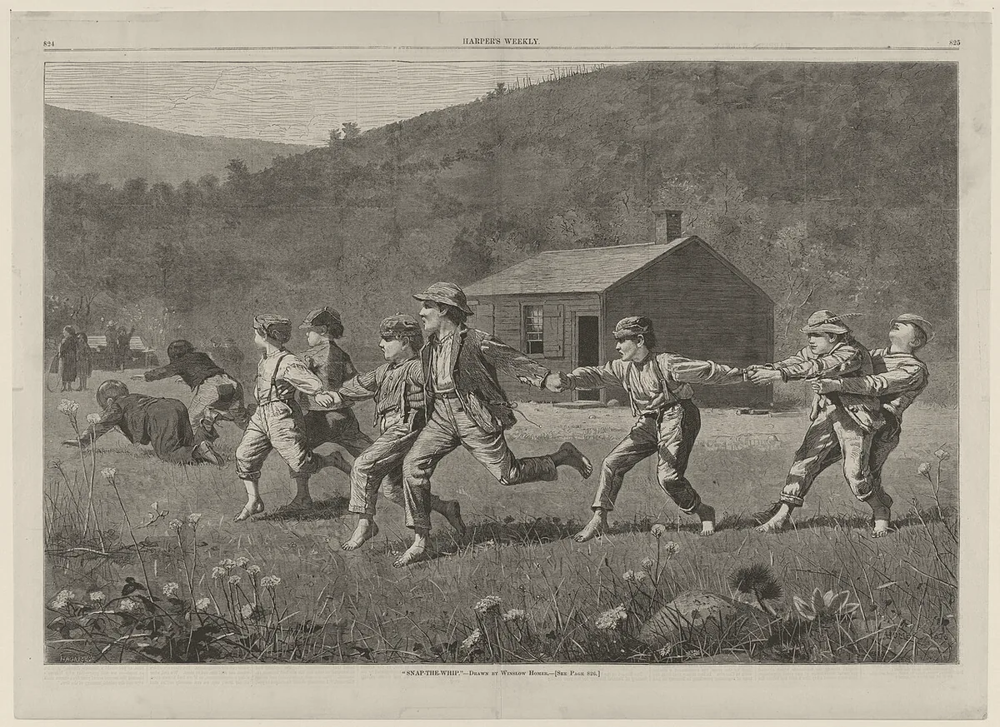

· Edición 49 · 4 min de lectura
Los colegios públicos mejoran, pero la brecha con los privados creció

Los colegios públicos mejoran, pero la brecha con los privados creció
En pocas palabras. En el Saber 11, el examen de grado once, la distancia entre colegios privados y públicos pasó de 30 a 36 puntos en doce años, según el Icfes. Importa porque 80 de cada 100 estudiantes van a un colegio público. Ceará, en Brasil, subió el aprendizaje atando el dinero de sus municipios a lo que aprenden los niños; aquí, el Gobierno entrega el 15 de noviembre las bases de su plan de desarrollo.
El dato curioso. En los años setenta nació en Colombia Escuela Nueva, un modelo para las escuelas rurales donde un solo maestro enseña a varios cursos a la vez; Vicky Colbert fue una de sus autoras. En 1998, un estudio de la Unesco encontró que, sobre todo gracias a ese modelo, Colombia era el único país latinoamericano donde los niños de primaria del campo superaban a los de la ciudad, salvo en las grandes ciudades.
Qué pasa. Lorica, en Córdoba, a orillas del río Sinú, fue en 2025 el municipio que más subió en el Saber 11: 12 puntos frente a 2024, según la Fundación Empresarios por la Educación.
Esta semana, un informe de la Universidad Icesi confirmó que 93 de los 97 territorios con secretaría de educación propia mejoraron frente a 2019. La brecha con los privados casi no se movió.
Según el Icfes, la entidad que hace el examen, en 2014 los colegios públicos promediaban 249 puntos y los privados, 279. En 2025, 253 y 289.
En PISA 2025, la prueba de la OCDE para jóvenes de 15 años, solo 29 de cada 100 colombianos alcanzaron el nivel básico en matemáticas; en la OCDE, 65.
¿Por qué pasa?
- Menos horas de clase. Muchos colegios públicos parten el día en dos turnos, y la jornada única prometida no llegó.
- Menos conexión. En 2024, 64 de cada 100 sedes públicas tenían internet; de las privadas, 99, según el DANE.
- Hogares más pobres. El puntaje también refleja lo que pasa fuera del aula. (Conocimiento general.)
Junio de 2015
La ley pone plazos
Jornada única en los colegios urbanos a más tardar en 2025, y en los rurales en 2030.
Junio de 2022
A medio camino, o menos
Unos 1,36 millones de estudiantes en jornada única: 18,6 de cada 100 de la matrícula pública.
Noviembre de 2025Plazo incumplido
Vence el plazo urbano
22 de cada 100 sedes públicas del país tienen jornada única.
Agosto de 2026Pendiente
Un decreto en consulta
El Ministerio propone sumar la jornada única a las reglas para contratar el servicio educativo. No tiene fecha de expedición.
2030Pendiente
El plazo rural
Fuente: Ley 1753 de 2015; Decreto 501 de 2016; Ministerio de Educación; CONPES 4188; Sucop
El patrón. Una meta sin dinero ni responsable se vuelve un deseo con fecha.
¿Alguien lo ha resuelto? Ceará, uno de los estados más pobres de Brasil, lanzó en 2007 un programa para que todo niño leyera al terminar segundo. Y reparte entre sus municipios parte de un impuesto según lo que aprenden sus estudiantes: 18 de cada 100 reales de esa bolsa.
Un estudio del Banco Mundial de 2021 comparó escuelas a uno y otro lado de la frontera del estado. Los alumnos de noveno de Ceará sacaron más en matemáticas y lenguaje, y la ventaja se duplicó donde el estado, además, asesoró a los municipios.
La idea venía de Sobral, una ciudad de Ceará: en 2000, 48 de cada 100 niños de segundo leían al nivel esperado; en 2004, 92.
En Colombia, un estudio del BID de 2016 encontró que alargar el día escolar se asocia con más aprendizaje, sobre todo entre los más pobres.
Pero ojo.
- Premiar resultados tiene trampa. En Ceará, al principio ganaron más los mejores alumnos; la brecha bajó cuando la fórmula empezó a castigar a los municipios con más rezagados.
- Alargar el día cuesta. Pide aulas, comedor y maestros; la Procuraduría advirtió que muchos colegios no tienen espacio.
- Otra medida, otra foto. Con la de Icesi, la brecha está quieta.
Qué hacer con esto
Para ir pensando. Si hay niños de la familia en un colegio público: cuántas horas de clase reciben de verdad y si tienen internet.
Cómo prepararse. No hay nada urgente. Vigile si las bases del plan, el 15 de noviembre, traen una meta de brecha.
Ojo con el cuento. Cada gobierno escoge la cifra que lo favorece. El anterior dijo que había reducido la brecha; El Tiempo mostró que no. Pregunte qué se mide y contra qué año.
Qué podríamos exigir. Una meta de brecha con fecha y responsable, y que el dinero premie a quien sube a los más rezagados.
Dos lecturas
Las dos posturas sobre el tema, en su mejor versión
Premiar a quien mejora. Cuando el dinero de los municipios depende de lo que aprenden los niños, alcaldes y rectores miran la lectura y las matemáticas. Ceará lo mostró. Sin metas medibles, la brecha se vuelve paisaje.
Dar más a quien está más lejos. Atar el dinero a los puntajes puede castigar a los municipios pobres y empujar a enseñar para el examen. Primero hay que igualar lo básico: horas de clase, internet, maestros y comedor.
Quién decide y cuándo
Quién decide. El Ministerio de Educación fija las reglas; las secretarías de educación certificadas manejan los colegios públicos.
Cuándo. El 15 de noviembre, el Gobierno entrega las bases del Plan Nacional de Desarrollo al Consejo Nacional de Planeación. El decreto de jornada única no tiene fecha.
Cómo participar. (Conocimiento general: el Consejo Nacional de Planeación recibe propuestas mientras estudia las bases.)
Seguimiento de la decisión
Pendiente · plazo:
Gobierno nacional: el Departamento Nacional de Planeación (DNP), con el Ministerio de Educación: Entregar al Consejo Nacional de Planeación las bases del Plan Nacional de Desarrollo 2026-2030, que incluyen un eje llamado «Milagro de la Educación». Ahí se sabrá si el plan fija metas para cerrar la brecha entre colegios oficiales y privados y para la jornada única.
Según el DNP, las bases pasan antes por el Confis y el Conpes, y el proyecto de ley se radicaría en el Congreso el 7 de febrero de 2027. No encontramos metas de educación publicadas.
Pendiente · sin fecha fija
Ministerio de Educación, con las secretarías de educación certificadas: Expedir el decreto que agrega la jornada única como principio de la contratación del servicio educativo y la incluye en los estudios de planta docente (proyecto PN-2026-32629).
Prometido desde · 1 plazo incumplido
La Ley 1753 de 2015 pidió jornada única en los colegios urbanos a más tardar en 2025 y en los rurales en 2030; el plazo urbano venció con unas 22 de cada 100 sedes oficiales en jornada única, según el CONPES 4188. El proyecto de decreto estuvo en consulta del 21 al 26 de agosto de 2026; no encontramos fecha de expedición.
La paradoja del día
Lo más absurdo de la edición, en dos líneas
En 1998, Colombia era el único país de la región donde los niños del campo superaban a los de la ciudad, con un modelo que luego copiaron más de 16 países. En el Saber 11, la distancia entre ciudad y campo pasó de 22 a 30 puntos en doce años.
Para conversar
La pregunta. ¿Debería el Estado dar más dinero a los colegios que mejoran o a los que van más atrás?
Para leer más
Libros para seguir con el tema
Educación en Colombia, de la OCDE (2016), de la serie de revisiones de políticas nacionales de educación. Repasa todo el sistema, de la primera infancia a la universidad, con la calidad y la equidad como preguntas centrales. Hay versión en español con portada del Ministerio de Educación.
The Smartest Kids in the World, de Amanda Ripley (Simon & Schuster, 2013; en inglés). Una periodista sigue a tres estudiantes de Estados Unidos en Finlandia, Corea del Sur y Polonia para entender por qué unos países enseñan más que otros.
¿Le interesa ver las fuentes?
Todos los documentos y datos que usamos
40 fuentes: 4 académicas, 13 oficiales, 1 de datos, 3 de organizaciones, 16 de prensa, 3 de referencia.
- Oficial Icfes (nota de política, agosto de 2026). Doce años del examen Saber 11.º: contexto y resultados 2014-2025
- Prensa IFM Noticias. Doce años de Saber 11: el puntaje nacional se recupera, pero la brecha entre colegios oficiales y privados es la más grande del periodo
- Prensa El Tiempo. Agridulces resultados de las Pruebas Saber 11 de 2025: puntaje global mejora, pero las brechas crecen y los aprendizajes siguen estancados
- Prensa El Espectador, sobre el informe del Observatorio de Realidades Educativas de la Universidad Icesi. Crece el número de jóvenes que salen mejor preparados del colegio, aunque persisten brechas
- Prensa Occidente, sobre el informe del Observatorio de Realidades Educativas de la Universidad Icesi. Calidad de la educación media en Colombia muestra recuperación
- Prensa IFM Noticias. La educación media en Colombia se recupera tras la pandemia, pero las brechas siguen intactas, según informe de la Universidad Icesi
- Organización Fundación Empresarios por la Educación (mayo de 2026). Análisis de resultados examen Saber 11° 2025
- Prensa Chicanoticias, con datos de la Alcaldía de Lorica. Lorica se puso la camiseta y subió más de 10 puntos en las Pruebas Saber 11 (11 de octubre de 2025)
- Oficial OCDE. PISA 2025 Results (Volume I): Country note, Colombia
- Datos DANE. Educación Formal (EDUC) 2024, boletín técnico (30 de abril de 2026)
- Oficial Función Pública (Gestor Normativo). Ley 1753 de 2015, Plan Nacional de Desarrollo 2014-2018 (artículo 57, jornada única)
- Oficial Función Pública (Gestor Normativo). Decreto 501 de 2016, que reglamenta la jornada única en los establecimientos oficiales
- Oficial Ministerio de Educación Nacional (junio de 2022). Encuentro Internacional Más y Mejor Tiempo Escolar: la jornada única llegará al 20% en 2022
- Oficial Departamento Nacional de Planeación. Documento CONPES 4188: Plan Nacional de Formación Integral
- Oficial Departamento Nacional de Planeación. Colombia asegura 2,04 billones de pesos para llevar formación integral a 3,6 millones de estudiantes en la próxima década
- Oficial Sistema Único de Consulta Pública (Sucop), Ministerio de Educación. Proyecto de decreto PN-2026-32629, documento de consulta
- Prensa Diario del Sur. Ministerio de Educación propone cambios en jornada escolar para impulsar implementación de jornada única
- Prensa El Tiempo. Proyecto de decreto del Ministerio de Educación: ¿qué cambia en preescolar, básica y media y por qué generó polémica?
- Oficial Procuraduría General de la Nación. Informe final sobre la implementación de la jornada única
- Académica Banco Interamericano de Desarrollo (Hincapié, documento de trabajo IDB-WP-679, 2016). Do Longer School Days Improve Student Achievement? Evidence from Colombia
- Académica Banco Mundial (Lautharte, de Oliveira y Loureiro, documento de trabajo 9509, 2021). Incentives for Mayors to Improve Learning: Evidence from State Reforms in Ceará, Brazil
- Organización Banco Mundial (2020). The State of Ceará in Brazil is a Role Model for Reducing Learning Poverty
- Académica Center on Reinventing Public Education (enero de 2024). Literacy for All: The Story of Sobral
- Académica Harvard Kennedy School, Building State Capability. A Problem-Driven Approach to Education Reform: The Story of Sobral in Brazil
- Referencia Stanford Graduate School of Education. Vicky Colbert, MA '73, enables transformative learning at national scale
- Organización CIPPEC, Mapa de la Educación en América Latina. Escuela Nueva, Colombia
- Prensa El Tiempo. Inconsistencias, omisiones y cifras erradas del presidente Gustavo Petro sobre pruebas Saber 11: brecha entre públicos y privados no cayó como dice
- Oficial Departamento Nacional de Planeación. DNP lidera articulación de alto nivel para la construcción del Plan Nacional de Desarrollo de la Patria Milagro 2026-2030
- Prensa El Tiempo. De La Espriella presenta la ruta para el Plan Nacional de Desarrollo 2026-2030 con 334 proyectos clave
- Oficial Ministerio de Educación Nacional (octubre de 2026). Ministra de Educación revela las 10 fracturas que recibió el Gobierno Nacional en materia educativa
- Prensa El Heraldo. 1.587.248 niños y jóvenes entre los 5 y 16 años fuera del sistema educativo: lo que dejó Petro, según la Mineducación (14 de octubre de 2026)
- Referencia OCDE (2016). Education in Colombia, Reviews of National Policies for Education (en español: Educación en Colombia)
- Referencia School Library Journal. The Smartest Kids in the World, de Amanda Ripley (reseña)
- Prensa El Heraldo. El 67 % de los trabajadores con mayores ingresos en Colombia está en ocupaciones con alto potencial de automatización por IA, según estudio (26 de octubre de 2026)
- Prensa Portafolio. El 67% de los trabajadores con mayores ingresos está expuesto a la automatización por inteligencia artificial
- Oficial Banco Mundial. Los precios de los productos básicos aumentarán un 23% en 2026 a medida que se intensifican las conmociones mundiales (28 de octubre de 2026)
- Oficial Bogotá, Secretaría Distrital de Salud. Vacunación en Bogotá jueves 29 de octubre de 2026: puntos habilitados
- Prensa El Heraldo. Cámara cumple orden de la Corte y mantiene intactos los artículos de la reforma pensional aprobados en Senado (28 de octubre de 2026)
- Prensa Infobae. La reforma pensional fue aprobada en la Cámara de Representantes: se subsanaron los nueve artículos devueltos por la Corte Constitucional (28 de octubre de 2026)
- Prensa IFM Noticias. Ley de sometimiento llegó a las plenarias con 29 artículos y una carrera contra el reloj: debe ser ley antes del 4 de noviembre
Glosario
Las palabras técnicas, explicadas
- Saber 11: examen de Estado que presentan los estudiantes de grado once; el puntaje global va de 0 a 500.
- Icfes: la entidad pública que diseña y aplica los exámenes de Estado en Colombia.
- PISA: prueba internacional de la OCDE que mide, cada tres o cuatro años, qué saben hacer los jóvenes de 15 años en lectura, matemáticas y ciencias.
- Jornada única: que los estudiantes de un colegio estudien en un solo turno largo, en lugar de dividir el día entre mañana y tarde.
- Sede: cada edificio o lugar donde funciona un colegio; un colegio puede tener varias.
- Secretaría de educación certificada: la de un departamento o municipio que maneja por su cuenta sus colegios públicos y sus maestros.
- Plan Nacional de Desarrollo: la ley que fija las metas y las inversiones de cada gobierno para sus cuatro años.
- CONPES: el consejo de política económica y social del Gobierno; sus documentos fijan políticas y comprometen recursos.
Nota metodológica
Cómo se hizo esta edición y qué no pudimos verificar
La mezcla de la semana. El lunes fue un avance de tecnología (Bre-B), el martes un nudo (feminicidio) y el miércoles un cambio de fondo con el mundo (calor y salud). La mezcla mínima ya está cumplida y va un solo nudo de tres posibles, así que hoy elegimos por puntaje. La cumbre de biodiversidad sigue reservada para el viernes y el sábado es de ciencia y tecnología.
Pasa la pregunta de entrada: importará en diez años, toca a millones de estudiantes sin hacer ruido y hay decisiones en curso. Pasa las cuatro condiciones del nudo: la brecha persiste en una serie de doce años; se repite porque los colegios públicos tienen menos horas y menos conexión, y la promesa de jornada única no se cumplió; el Ministerio, las secretarías y el plan de desarrollo pueden cambiarla; y el daño se mide en aprendizaje. El hecho que lo reactiva es el informe de Icesi de esta semana.
Puntaje. De 1 a 3 en cada criterio; peso en la vida y horizonte valen doble (máximo 24).
| Tema | Puerta | Alcance | Peso | Horizonte | Cercanía | Margen | Mirada | Total | Resultado |
|---|---|---|---|---|---|---|---|---|---|
| Brecha entre colegios públicos y privados | nudo | 3 | 3 | 3 | 3 | 2 | 2 | 22 | Elegido (edición 49) |
| Vacunación contra el VPH, por debajo de la meta | nudo | 2 | 3 | 3 | 3 | 2 | 2 | 21 | Sin hecho nacional reciente |
| Inteligencia artificial y empleo, estudio de la Javeriana | fondo | 3 | 2 | 3 | 3 | 1 | 1 | 19 | Sin decisión en curso; candidato para el sábado |
| Caída de la matrícula escolar | nudo | 3 | 2 | 3 | 3 | 1 | 2 | 19 | No pasa el filtro: sin mecanismo conocido |
| Revocación de la reserva amazónica | fondo | 2 | 2 | 3 | 3 | 2 | 1 | 18 | Reservado para el viernes |
| Precios de materias primas, Banco Mundial (mundo) | contexto | 3 | 2 | 1 | 3 | 1 | 1 | 14 | Coyuntura; no pasa la pregunta de entrada |
Ningún otro tema llega a 19 con un filtro aprobado y distinto del elegido, así que hoy hay una sola edición. Antes de elegir revisamos el archivo: PISA y el Saber 11 solo habían aparecido en «Lo que descartamos» (22 de octubre y 27 de octubre), nunca como tema, así que la edición no lleva seguimiento.
Hicimos unas 60 búsquedas en español e inglés. No pudimos abrir los documentos completos; trabajamos con resúmenes, fragmentos y resultados de búsqueda. De 40 fuentes, 24 no son de prensa.
Quedó sin verificar o con límites:
- Las cifras del Icfes (249 y 279; 253 y 289; 22 y 30) las tomamos de IFM Noticias, que reseña la nota del Icfes. El Tiempo, con otra base, da 281 y 250 en 2025, y un informe de la Universidad Javeriana da una brecha rural de 18,5 a 26,7 puntos. Todas van en la misma dirección.
- El dato de 22 de cada 100 sedes en jornada única sale de un fragmento del CONPES 4188, con corte a noviembre de 2025; cuenta sedes urbanas y rurales juntas, y no encontramos una segunda fuente.
- El aumento de 12 puntos de Lorica es de la Fundación Empresarios por la Educación; la Alcaldía, citada por un medio local, da 11 (de 242 a 253). Dejamos fuera el dato de la Alcaldía sobre bachilleres públicos con más de 400 puntos porque solo lo encontramos en ese medio.
- El efecto en Ceará es moderado (0,15 desviaciones estándar en noveno grado). Sobre Sobral, el Center on Reinventing Public Education dice que 48 de cada 100 leían al nivel esperado en 2000; una nota de Harvard lo cuenta al revés, como los que no leían. Usamos la primera.
- Del estudio del BID leímos el resumen. La advertencia de la Procuraduría sobre el espacio en los colegios viene de un resumen de su informe.
- La fecha del 15 de noviembre la dan el DNP, El Tiempo y La República; un medio dice el 3 de noviembre.
Seguimiento de decisiones. El 28 de octubre, la plenaria de la Cámara terminó de votar los apartes de la reforma pensional que había devuelto la Corte: negó o vio retiradas las proposiciones pendientes y el texto quedó como lo aprobó el Senado, según El Heraldo e Infobae. Ahora la Corte revisa si el vicio quedó corregido. Lo anotamos en la edición del 16 de octubre y marcamos esa decisión como tomada. De la ley de sometimiento no encontramos votación en las plenarias; la edición del 21 de octubre queda como estaba.
El grabado es «Snap-the-Whip», de Winslow Homer, publicado en Harper's Weekly en 1873: una escuela rural de una sola aula en Estados Unidos. No encontramos una escena de escuela colombiana de época; Wikimedia Commons nos frenó varias veces por exceso de consultas antes de dar con esta.
El libro: no encontramos ninguno de los dos en el catálogo de Santo & Seña, así que van sin enlace. Los datos de editorial y año los tomamos de la página de la OCDE y de una reseña de School Library Journal; no encontramos una edición en español del libro de Ripley.